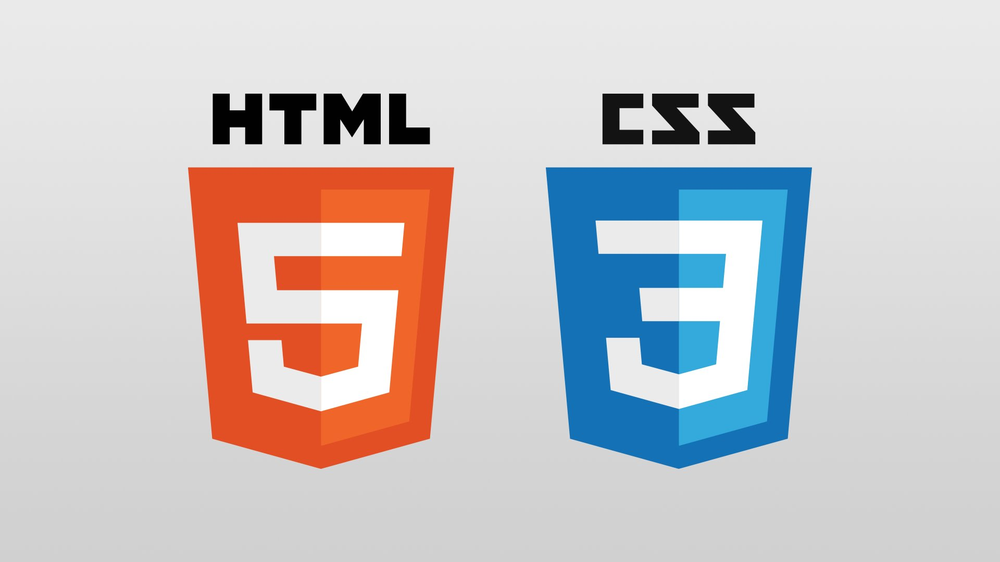

Portfolio website

Mijn eerste portfolio website, gemaakt met HTML en CSS voor het vak User Interfaces.
Bekijk het projectEen overzicht van mijn projecten en oefeningen.

Mijn eerste portfolio website, gemaakt met HTML en CSS voor het vak User Interfaces.
Bekijk het project